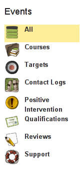
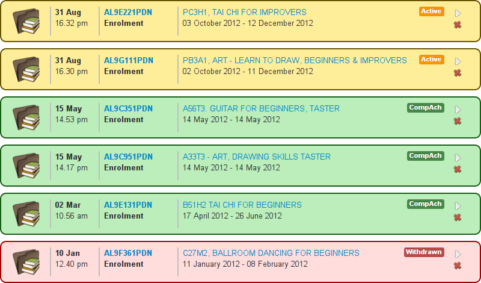
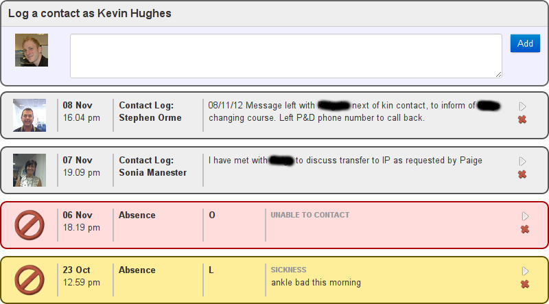
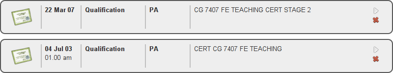
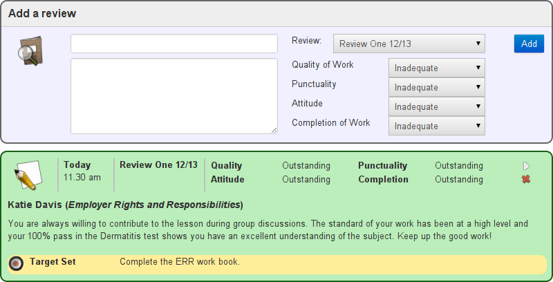
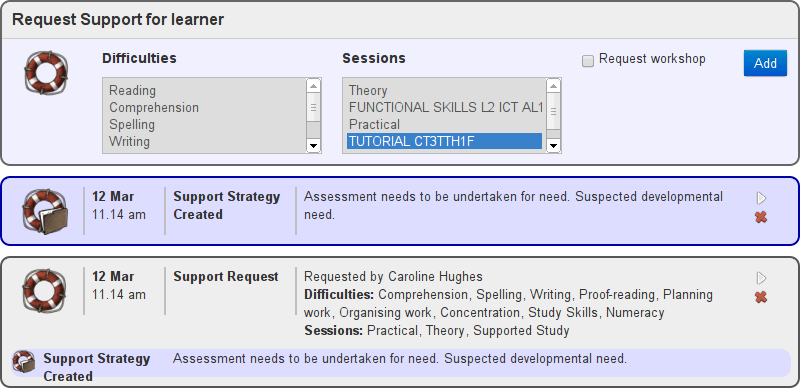
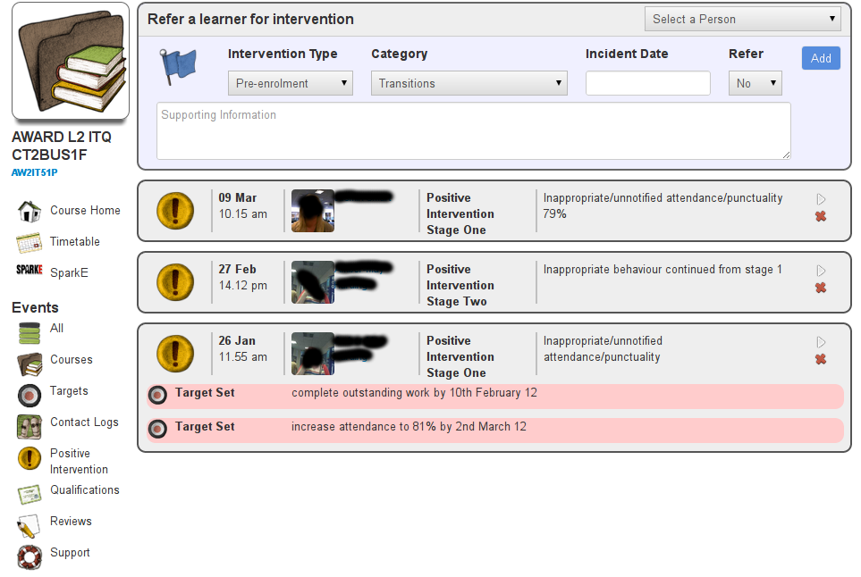
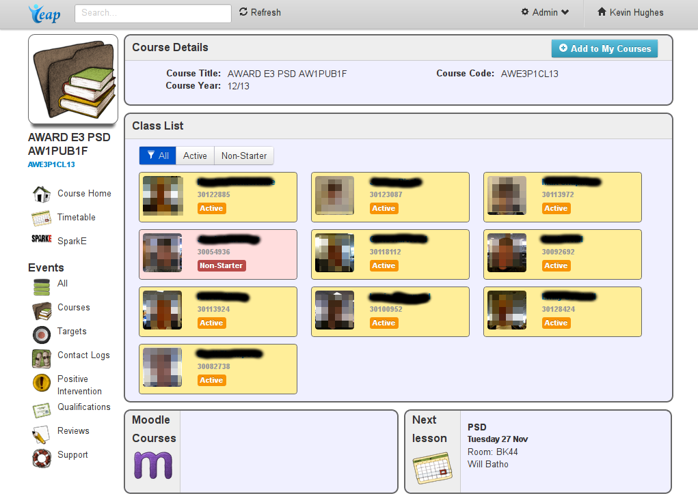
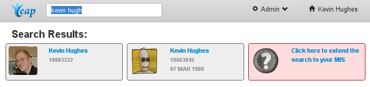

This leads to a consistent format for all student data.
The Timeline
|  |
You can focus in on specific types of event.
These views are completely configurable.
And this is where extra information is logged.
|
The Timeline: Courses

A history of a learner's applications and enrolments.
The Timeline: Contact Logs

Staff can log all contact with a learner to keep in sync and provide an audit trail.
The Timeline: Qualifications

Qualifications achieved are drawn automatically from the MIS.
Inputting qualifications on entry in planned for Summer 2013 with possible integration with (also planned)
initial assessment profiles.
The Timeline: Reviews

Reviews are grouped into configurable categories and can be batch printed by course.
The Timeline: Support Record

The Timeline
All eilp information is personal and time-based. Leap organises them in to one continuous narative of a learner's journey.
I get a simple overview of my learning journey and I'm free to plan for my future.
The abstraction of the learner's data makes Leap a dev platform which
I can tailor to my institution's needs.
This is great for tracking the progression of individual learners.
But can I have a class-based overview?
Course Timeline: Disciplinary

The Timeline
This concept is currently extended into the following areas:
- Targets
- Attendance Tracking
- Disciplinaries (Positive Intervention)
- Qualifications
- Learner Reviews
- Application and Enrolment data
- Support Requests and Strategies
- Absence Reporting
And we have plans for:
- Moodle Assignments
- Initial Assessment Profiles
- More detailed Positive Intervention information.
Student Home Page
The home page shows me what's
important to me right now, and provides fast access to what I need.
Timetables
It's easy for me to see where I need to be, and what's coming up.
The timeables show all the attendance data I need in the most convienient place.
And all this stuff comes from the institution's MIS. I don't need to do anything!
Added value for staff: Course Home Pages

Added value for staff: Searching

Search by learner name, person code, course title or course code.
/